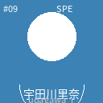
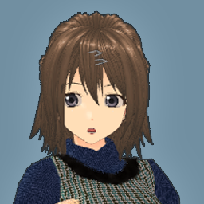
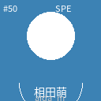
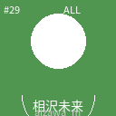
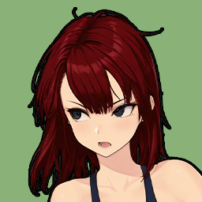

開 戦
OFFICIAL MATCH SIGNED ・ WEEK 9
PROVOKING SIDE
宣 戦
もう口喧嘩じゃ終わらせない。リングで決めるよ。

宇 田 川 派 ・ UDAGAWA
宇田川 里奈
LEADER
宇田川派
4名




VS
両派の対立
泥 沼
🔥🔥🔥🔥🔥
RESPONDING SIDE
応 戦
面白い。売られた喧嘩は、全部買う主義よ。
三 浦 派 ・ MIURA
三浦 早紀
LEADER
三浦派
3名

MAIN EVENT ・ 公式戦化
派閥抗争 ・ 直接決戦
水面下でくすぶっていた火種は、リング上での戦いにまで燃え広がった。
来週の興行、メインは——この一戦。観客も、この対決に期待を膨らませている。
来週の興行、メインは——この一戦。観客も、この対決に期待を膨らませている。
両派の対立は、後戻りできない段階に入った
この一戦は公式戦として記録される